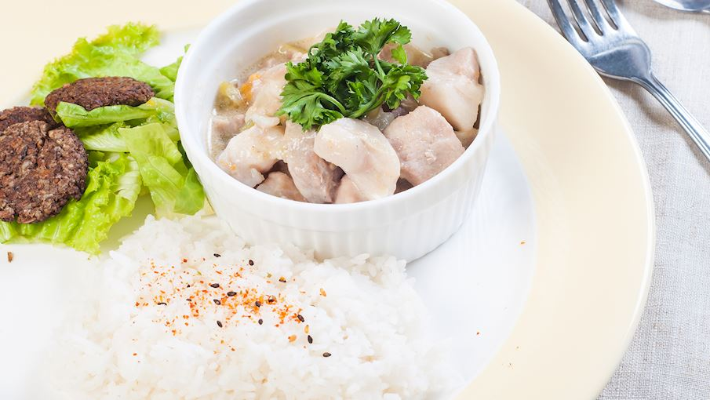
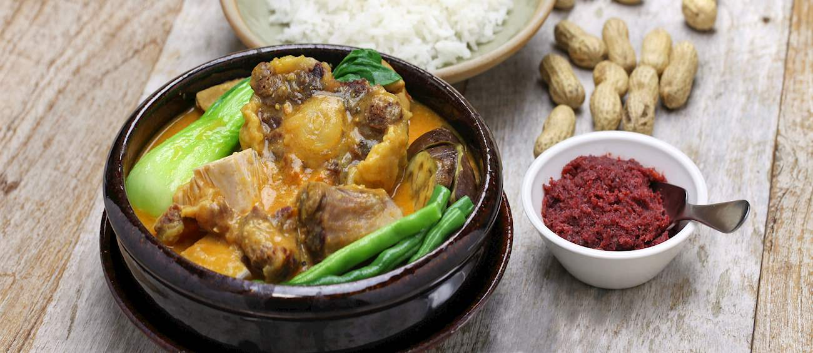

About Filipino Cuisine
Filipino cuisine is a vibrant blend of flavors and traditions that showcases the Philippines' rich cultural heritage. Influenced by Malay, Chinese, Spanish and American cultures, it combines indigenous ingredients with a wide range of cooking techniques.
At its core, it relies on fresh, local ingredients, enhanced by sauces like soy sauce, vinegar and fish sauce. Together they give many dishes their distinctive savory, sour and aromatic flavors.
Ingredients
Rice is the staple and is served with almost every meal. Pork, chicken, beef and seafood are the main proteins, while vegetables such as eggplant, okra, squash and string beans add freshness. Coconut milk and calamansi round out many recipes.
Try: Arroz Caldo, Pinakbet, Laing
Sauces
Soy sauce (toyo), cane vinegar (suka) and fish sauce (patis) balance salty, sour and savory flavors. Bagoong, a fermented shrimp or fish paste, adds extra depth and is often served on the side.
Try: Adobong Baboy, Kare-Kare, Pinakbet
Methods
Cooks marinate meat for adobo, simmer sour broths for sinigang, stew in coconut milk for ginataan, grill over charcoal for inihaw and deep-fry for crisp dishes like lechon kawali and lumpia.
Try: Sinigang na Baboy, Lechon Kawali, Lumpia
The Flavors of the Philippines
Filipino dishes are built around a balance of sour, salty, creamy and savory tastes. Here are four you will meet again and again.
Sour
Sinigang gets its tang from tamarind, served in a hot broth with vegetables.
Salty and Tangy
Adobo braises meat in soy sauce and vinegar with garlic and bay leaves.

Creamy and Spicy
Bicol Express simmers pork in coconut milk with chili peppers.

Rich and Nutty
Kare-Kare is a stew in a thick peanut sauce, usually eaten with bagoong.
Food Gallery
Choose a category to filter the dishes, then select a photo to see it larger.
Join Us on a Culinary Adventure
Explore the vibrant and diverse world of Filipino dishes. From the savory adobo to the hearty sinigang, there's a dish for every palate. Follow our social media pages for more culinary delights and updates.
"Every bite of Filipino food tells a story!"